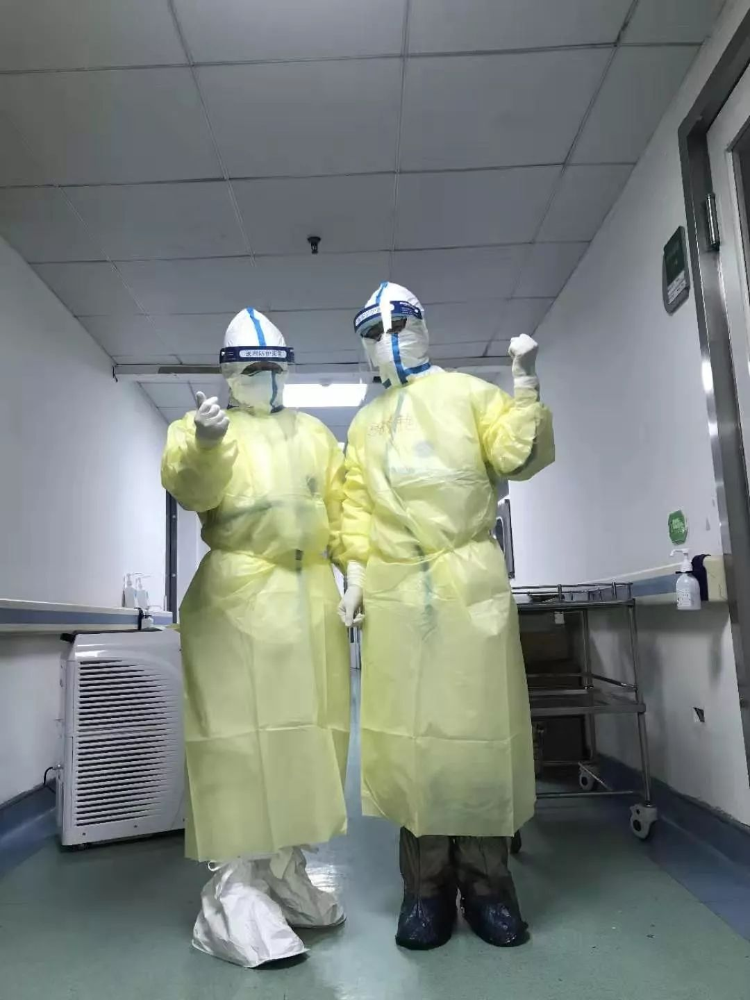
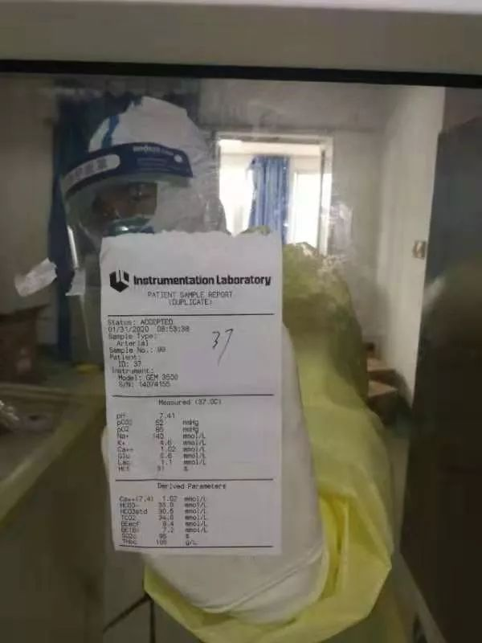
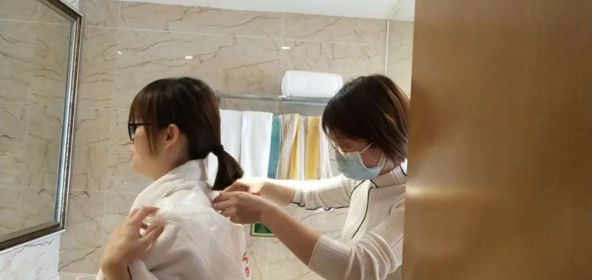
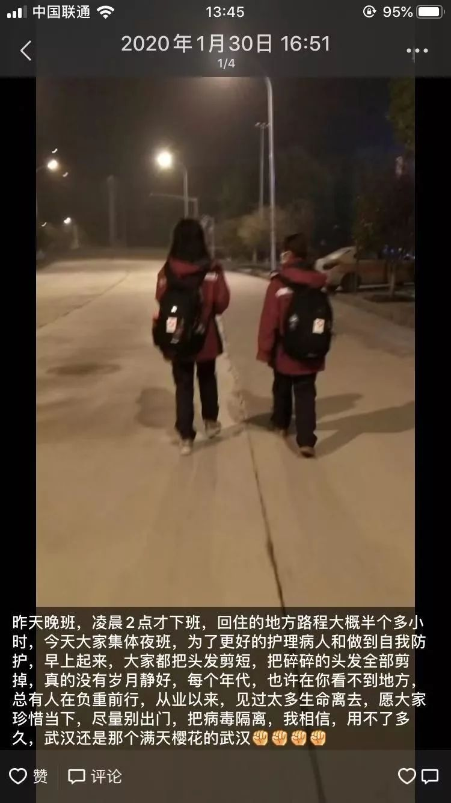

湖南援鄂护士在武汉金银潭医院ICU五日记丨新冠肺炎亲历–专题-中国经营网
原文链接 备份链接 湖南援鄂护士在武汉金银潭医院ICU五日记丨新冠肺炎亲历 2020-02-01 14:32 作者：刘颂辉 来源：中国经营网 本报记者 刘颂辉 上海报道 “在前往武汉之前，我做好充足的准备接受各种困难，然而当我真正融入到武 …

走进武汉金银潭医院，第一感觉是安静。与在武汉闹市区其他综合类的三甲医院不同，这家传染病专科医院，楼与楼之间隔得很远，种了好多树，即使在冬季也是郁郁葱葱。收治了几百位新型冠状病毒肺炎患者的住院楼，门窗紧闭，站在楼下几乎听不到人声。因为患者不需家属陪同，路上也没人来往走动。
但安静之下是持续不断的战争，在住院部南楼五到七层的重症病房里，是不断增加的给氧量，一天要发生许多次的抢救，和医护们对被感染的恐惧。在武汉的疫情中，金银潭医院作为第一批定点收治病人的医院，是战斗的第一现场。
从1月下旬至今，已经有来自上海、北京、陆军军医大学和湖南等地的医疗队进入金银潭医院，支援病人的医疗和护理工作。在重症病房，来自各地的医护们一起工作。1月27日，中南大学湘雅医院派出第一批医疗队，这其中有5位来自重症医学科的护士，他们在金银潭医院的重症监护室里帮助患者进行「持续血液净化治疗」。这种治疗方式俗称「血透」，能清除患者体内的杂质。由于新冠病毒肺炎可能会引起多器官衰竭，通过血透可以延长患者的治疗时间，让他们得以继续等待更好的药物和更好的治疗方式。其中的3位护士，在2月1日向《人物》讲述了在重症监护室的经历，她们分别是张春艳、朱恋和李湘湘。
以下是她们的口述：
文 | 罗婷
编辑 | 糖槭
1
1月28日，是我们在金银潭医院正式下临床的第一天。我们负责的病区，在金银潭医院住院部南楼的五层、六层、七层，是收治最危重病人的病区。
进到病房前，光穿衣服就要花快半个小时——先在更衣室换工作服，换完会经过医生办公室，进入一个缓冲间，这个缓冲间里也有医生们在配药、写文书，我们就在这里洗手，洗完手戴口罩、戴帽子，再洗手，穿防护服。再进入一个缓冲间，在这里再穿一层防水服，穿两层鞋套。接下来还是一个缓冲间，是平常外围的工作人员给我们递东西的地方。最后就到病房了。
第一次进到监护室的感觉，不是别的，是真没想到，监护室的条件那么艰苦。因为这次是临时把病房改成了监护室，严格意义上来讲，只有病人的病情达到了监护室的要求，病房的条件没达到。
真正的监护室，是一个很大的房间，能一目了然看到病人的所有情况。床上的设施也可以做到串联，比如我现在在看一号床的病人，如果二号床的病人生命体征不好了，我在一号床也能看得到，床边有个红灯会一直闪烁，告诉我二号床出了什么问题。而这个监护室，是一个个的病房，每个病房里有两到三个病人，都要靠自己发现。你要时刻走来走去，观察、巡视，病房之间还是会有距离，你就担心哪个病人没观察到位。心里慌，没谱。
对病人来讲，条件也比较艰辛。这里的氧气不是中心给氧，需要我们自己推氧气罐，氧气罐好大、好高，我们要用尽全力。也因为整个医院都是确诊的病人，又没有家属陪同，我们一个人管六七个病人，我觉得他们心里应该也很害怕，被隔离在这里，不像平时住院，好歹有家人陪，或者可以散步，在这里只能躺在床上休息。
监护室里，至少说我们护理的病人，基本年龄都偏大，主要集中在50岁到70岁，基本的肺部情况本身就不是很好。也碰到过29岁的、40多岁的，但他们病情相对没那么重。大多数病人的症状都是呼吸困难。每个人的严重程度不一样，有的靠着无创呼吸机和高流量就可以了，有的要插管，最严重的也有，用上了体外肺。
我们觉得很不忍心的一点是，他们是两到三个人一个病房，中间是没有遮挡的。三分之二的病人用了镇静镇痛，是一直在睡觉，但还有三分之一的人是清醒的、有意识的。他们肯定会目睹同病房的病人抢救的过程。有时候病人呼吸实在太难受了，无创呼吸机没办法支持你的呼吸了，我们就要搞人工气道，从病人嘴里插一根管子，有时候还要做胸部按压。
被抢救的病人难受，同病房的病人看到了，我们想应该也挺难受的吧。不想让他们看到这个抢救过程，但在这里做不到，没有帘子可以给他们隔开。他们态度很好，人也很好，但是大家都是同一种病毒感染的，肯定心理压力大，他们没有表现出来，但我们心里都清楚，看着也觉得好心酸的。
那些病人是清醒的，只是呼吸很费力，给他们氧浓度打高一点，他们就会呼吸得舒畅一些。他们很安静，不是真的有事不会喊我们，跟我们说话说得最多的就是「谢谢」，「对不起」，「麻烦了」。
有一次碰见一个病人，40多岁，因为没有家人在身边，大便小便都是靠我们清理。每给他搞一回粑粑，倒一回尿，他都会跟你说「对不起」。听了这个话，都不晓得该怎么回答了。他觉得什么脏活都给你干了，但对我们重症监护室的人来说，这是职责内的事情，我一般都回答「没关系的」。就算在这个时候，你其实也能看到一个人的体面和尊严。

护士们用玻璃上贴纸的方式与外界沟通 图源受访者
2
其实第一天上完班，我们三个人里就有一个人（朱恋）哭了。
一是环境比较陌生，我们在湘雅医院单纯做重症监护，其实很少接触这种需要隔离的传染病人，大批呼吸衰竭的病人，可能这一秒还好好的，下一秒就发生了变化。所以现在的工作跟原来的工作，节奏不一样，更重一些。
另外你的搭档又是第一天来的，你们之前不认识，你说话的那个点，对方也不一定知道。比如在抢救的时候，谁负责按压，谁负责喷药，谁来记录抢救时间，谁下医嘱，一个团队的人分工都应该很明确。但是现在大家都穿着防护服，谁也不认识谁，你刚过来，也不清楚抢救物资在哪里，又要喊人帮忙，但是别人也要管六七个病人，她们自己的病人可能状况也不是很好。整个人在慌乱和盲目中做这些事情，压力真的很大。
那天从早上8点到晚上6点，10个小时的班，我（朱恋）从来没有穿着防护服、戴着N95，这么长时间的工作过。真的是全身汗湿了，身体其实很不舒服，最危险的是，口罩被汗打湿了。我当时心里想，按道理来说，打湿了口罩，防护作用就没那么大了。我给病人喂饭喝水的时候，呼吸机里吹出来的风刮在我脸上，口罩又湿了，暴露风险很大，我心理压力也特别大。回去就哭了。哭完就好了点，第二天慢慢适应了，现在心情已经挺平稳了。
来之前原本我（张春艳）还在担心，因为病毒的存在，一直不能开空调，会又冷又困，但实际上，在这种封闭又忙碌的环境中，真的会没有困意，每次大汗淋漓的时候，我都会站在走廊上，闭着眼睛，数10秒，然后再开始忙碌的工作。
说真心话，我们是医护人员，主动请缨来上战场，但也都是别人的女儿，都是普通人，都怕被感染，也都经历过一些比较惊险的时刻。
也是第一天上班，当时我（张春艳）戴着眼镜和口罩，没有戴面罩，只是一个常规的防护。在里面时间一长，口罩全部汗湿了，眼镜就容易起雾。起雾是一个标志——说明你的密封性不好，气体会跑出来。我们有规定，眼镜一旦起雾就必须立即去更换。
但那天我刚好在帮一个病人插管，眼镜一直在起雾，那种情况下你是根本不可能拿你的手去调节的，因为你的手一直在被污染。也没想过去更换，再说，更换的话更没有物资，你也不想浪费。本来防护服就少，你一更换，就是从头到尾，面屏、防护服、N95。这件事一直在我心里压着，从来没讲出来过，但是心理压力还是很大的。
不只是这些时候，我们帮病人喂饭喂水，处理大小便、抢救，一直都是在近距离接触他们。这些病人们会经常咳嗽、打喷嚏，这是止不住的。所以如果说医生是一线，其实我们是超一线吧。我们在重症监护室里工作，手上拿着对讲机和外面对话，要什么东西，也是贴个条子在玻璃上面，他们再送进来。
所以对我们来说，对吃、住都没什么要求。最担心、最紧张、最敏感的，就是怕防护物资跟不上。我们现在的防护其实还不是最高级别的。N95戴的是两层的，蓝色的那种薄款，其实不符合要求。标准的应该是那种三层的白色N95。但是物资短缺，现在没有那一种。我们就自己注意点。
到了这边之后，我们都剪短了头发，不能去理发店，就自己在超市买了把剪刀，互相帮着剪。按规定来说，脱完防护服，我们最好是在医院里洗澡洗头，那肯定是头发短一点方便些，也容易干，所以就剪了。但也不能剪太短，要能绑起来，帽子才能遮得住。如果太短了，会从边边露出来，扎到眼睛，其实也是一个污染。
从病房出来，整个流程也很繁琐。穿隔离衣其实还好，脱比较麻烦，每脱一层，都要洗一次手。每一个洗手的动作大于15秒，洗手的过程要达到3分钟，这些天洗了多少次手，早就数不清了。

护士们在互相剪头发 图源受访者
3
这一次来金银潭医院，我们都是自愿报名。当时护士长在群里发了个消息，说国家卫健委需要5位有重症护理经验、又能够做连续性血液净化的护士，我们就马上报名了，不到半个小时就报满了。
当时我们有的人在家里穿着睡衣，躺在沙发上嗑瓜子、看电视，有的是还在逛街。报完名马上消息就来说，让我们一个小时后赶到医院，真的是只有半个小时收拾行李。也不晓得来多久，随便收拾了点，我爸爸也没问我要什么，就跑下去，买了5盒方便面上来。

中南大学湘雅医院派出的5位来自重症医学科的护士 图源中南大学微博
到了医院就马上培训，怎么穿脱防护服。虽然说我们都在湘雅的重症医学科工作了快十年，但是真是没有这么长时间地穿过防护服。晚上培训完，第二天坐高铁到了武汉，第三天就上班了。
几年前的埃博拉疫情，当时也在我们这里招募，我们都想报名，但是硬性条件很高，要求是党员、英语六级、主管护师，那时候我们都很年轻，没有达到这些要求。雅安地震也是一样的，想报名，没达到标准。这一次不一样，我们都上班这么多年，很多经验也有了，就希望能把自己专业上面的东西，服务于他们吧。作为医护人员没有谁不想贡献自己的力量，只是岗位不同而已。我们留在湘雅的同事，同样也是在一线。
我们是觉得没什么，但跟家里人说话还是挺注意的。不会跟爸妈视频，就怕跟他们搞视频，他们就会问这个问那个，问得自己有情绪了，所以基本都是聊微信，给他们报平安。我（朱恋）外婆年纪大了，快80了，每次我跟她打电话，一听到我的声音她就会哭，觉得我很可怜，在这里上班很辛苦，就会心疼，我后来也干脆不打电话了，每天在家族群里报个平安就行了。
我（张春艳）女儿今天还跟我老公讲，说妈妈怎么还不回来？好久没有看到她了，我们一起开车去接她。因为我以前上班，我老公每天都开车去接我，她今天就拉着爸爸，说要去接妈妈回来。我能做的就是每天和她视频，让她每天都能看得到我。
离开长沙的时候，我们匆忙打包了行李，预计是待上一个月。但现在，我们其实不知道会持续多久。最大的愿望有两个，一个就是防护物资充足。前两天上夜班，他们告诉我防护服不够了，夜里不能出来，我当时就拿了两大条士力架，立马灌了下去，好腻好甜，但是我必须吃一点，士力架热量高，经得起熬，我怕在里面我撑不了那么长时间。另外一个愿望就是，希望赶快研发出药物，或者有效的疗法，治好他们的病。
原来我们一直想来武汉看樱花，一直没来成，现在再过一个多月，樱花就要开了。希望到时候疫情也过去了，看完樱花，我们都可以回家。这是最好的。

护士的朋友圈 图源受访者

长按二维码向我转账
受苹果公司新规定影响，微信 iOS 版的赞赏功能被关闭，可通过二维码转账支持公众号。
原文链接 备份链接 湖南援鄂护士在武汉金银潭医院ICU五日记丨新冠肺炎亲历 2020-02-01 14:32 作者：刘颂辉 来源：中国经营网 本报记者 刘颂辉 上海报道 “在前往武汉之前，我做好充足的准备接受各种困难，然而当我真正融入到武 …
原文链接 备份链接 陈德昌说，金银潭医院的重症病人情况比较严重。在他工作的病房里，29个病人有16个都上了呼吸机，同时面临物资短缺的难题。当他们作为上海医疗队进驻时，原有医护人员已连续工作近一个月了。这次出征，比想象中要艰苦。 57岁的陈 …
原文链接 备份链接 来源 | 潇湘晨报（xxcbwx） “我们这收治了个病患吧，一个人可能感染了好几个人。其中就包括照顾他的医护人员，不是我们医院，是其他医院的。” 口述 | 武汉市肺科医院ICU主任 胡明 采访 | …
原文链接 备份链接 记者/魏晓涵 实习记者/陈威敬 编辑/刘汨 宋建华 孝感市第一人民医院的医生拆下文件袋作为保护面罩 年初三下午5点，王隆和同事在湖北襄阳去往河南新乡的路上，已经连续开了7个小时车。目的地有一家防护服的生产厂，称可以为他 …
原文链接 备份链接 新型冠状病毒疫情像是一场突如其来的阴霾，在这个冬天笼罩了华中大地。相较于最受关注的武汉市民，周边城市的人们，像是处在阴霾边缘，遭受侵袭，却又不常被看见。面对重重困难，孝感、黄冈、黄石、信阳、荆州、天门……各个城市的百姓 …